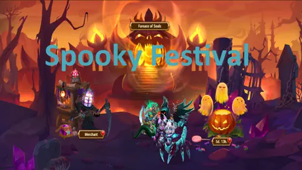
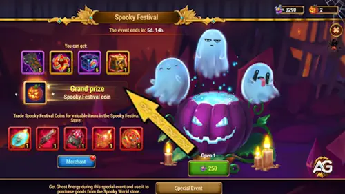
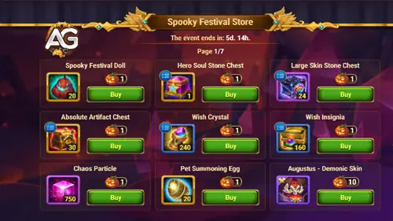
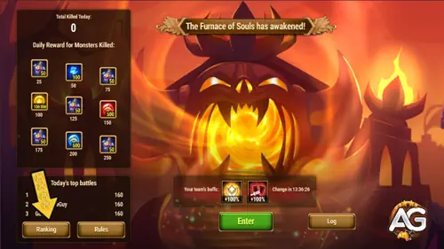

Todo ano, no final de outubro, o Hero Wars: Dominion Era celebra o Halloween com um evento especial de 7 dias chamado Festival Assustador.
Durante esse período, os jogadores podem ganhar Energia Fantasma, Moedas do Festival Assustador e Avatares de Halloween exclusivos ao completar missões do evento e gastar recursos.

Festival Assustador – Evento de Halloween em Hero Wars: Dominion Era, um jogo desenvolvido pela Nexters.
🕸️ Visão Geral do Evento Festival Assustador
Duração do Evento: 7 dias
Mês do Evento: Outubro
Recompensas Principais: Energia Fantasma, Moedas do Festival Assustador, Avatares
Moedas Especiais: Energia Fantasma (usada nas atividades do evento) e Moedas do Festival Assustador (usadas na loja de Halloween)
🧙♀️ Caldeirão do Festival Assustador
O Caldeirão do Festival Assustador é onde você gasta a sua Energia Fantasma acumulada durante o evento.
Cada giro do caldeirão concede uma recompensa aleatória da lista abaixo, e você pode continuar girando enquanto tiver energia disponível.

Caldeirão do Festival Assustador - Hero Wars: Dominion Era.
Recompensas do Caldeirão do Festival Assustador
Recompensa
Quantidade
Tipo
Grande Runa de Encantamento
x5
Recurso para encantamento de equipamentos
Núcleo do Caos
x3
Recurso de artefato usado para evoluir heróis
Baú Pequeno de Pedras de Skin
x5
Contém Pedras de Skin para aparências de heróis
Baú Absoluto de Artefato
x1
Permite escolher qualquer fragmento de artefato
🎁 Grande Prêmio: Moeda do Festival Assustador
x1
Usada na loja do evento para recompensas exclusivas
💡 Dica: O Caldeirão é a principal forma de converter sua atividade em recompensas durante o evento.
Certifique-se de usar toda a sua Energia Fantasma antes do término para não perder recursos valiosos e a chance de ganhar Moedas do Festival Assustador extras!
Loja do Festival Assustador
A Loja do Festival Assustador é onde você pode gastar suas Moedas do Festival Assustador, obtidas ao completar missões do evento e como Grandes Prêmios no Caldeirão.
Dentro da loja, os jogadores podem comprar diversos itens valiosos e skins exclusivas por tempo limitado.

Loja do Festival Assustador - Hero Wars: Dominion Era.
Skins temáticas de Halloween exclusivas, disponíveis apenas durante o evento Festival Assustador.
Recursos
Equipamentos de Heróis, Equipamentos de PETs, Baús de Pedras de Skin, Baús Absolutos de Artefatos e muito mais
Use suas moedas para acelerar o progresso dos heróis e mascotes de forma eficiente.
💡 Nota de Alexandre
As Skins Demoníacas às vezes podem ser obtidas fora do evento ou através de ofertas especiais, mas para os jogadores F2P, elas precisam ser compradas com Pedras de Skin, o que exige um investimento considerável de recursos.
Por isso, é melhor priorizar essas skins para os heróis principais do seu time ou heróis meta que você pretende evoluir no futuro.
Depois de garantir as skins mais importantes, concentre-se em comprar itens que deixem seus heróis mais fortes no geral, como materiais de aprimoramento de artefatos e caos.
🔥 Fornalha das Almas
Durante o evento Festival Assombrado, a Fornalha das Almas é a principal atividade de batalha, onde você enfrenta uma horda diferente de inimigos a cada dia.
Cada dia possui bônus únicos que mudam diariamente, tornando cada luta diferente e exigindo ajustes estratégicos na sua equipe.

Fornalha das Almas - Hero Wars: Dominion Era.
💡 Na tela do evento, você pode conferir o Ranking de Dano — ele mostra os jogadores com melhor desempenho e suas melhores equipes, o que pode ajudar a planejar sua formação e melhorar sua pontuação.
A pontuação máxima por batalha é de 160 pontos, e você precisará atingir um total de 250 pontos para coletar todas as recompensas disponíveis.
Fornalha das Almas – Recompensas por Pontos
Pontos Necessários
Recompensa
25 Pontos
50 Energias Fantasma
50 Pontos
100 Energias Fantasma
75 Pontos
50 Energias Fantasma
100 Pontos
100.000 de Ouro
125 Pontos
50 Energias Fantasma
150 Pontos
500 Pedras de Aparência
175 Pontos
50 Energias Fantasma
200 Pontos
500 Pedras de Aparência
250 Pontos
50 Energias Fantasma
💡 Nota de Alexandre: As melhores equipes na Fornalha das Almas normalmente utilizam o poderoso combo Orion + Augustus, graças ao seu altíssimo dano puro.
No entanto, Augustus é um herói muito raro — nem todos têm acesso a ele. Para usar qualquer herói neste evento, você precisa possuí-lo (mesmo no nível mínimo), pois o evento os aprimora temporariamente para o nível máximo nas batalhas.
Se você não tiver o Augustus, ótimas alternativas são o Heidi ou a Iris, que são muito mais fáceis de obter e também causam alto dano puro, sendo excelentes opções para jogadores F2P.
🎯 Dica: Foque em maximizar seu dano diário.
Usar heróis com ataques em área e suportes que aumentem a sobrevivência ajudará você a alcançar pontuações mais altas com consistência.
Lembre-se: quanto maior a sua pontuação, mais Energias Fantasma você ganhará — e elas podem ser trocadas depois no Caldeirão do Festival Assombrado por recompensas exclusivas!
🎃 Missões do Evento Festival Assombrado
Você pode completar as seguintes missões durante todo o evento. Cada linha de missão foca em diferentes atividades, como fazer login, gastar Esmeraldas, usar Energia ou abrir baús do Outland.
1. 👹 Caçador de Demônios
Destrua os Minions do Mal na Fornalha das Almas para ganhar Energias Fantasma e recompensas exclusivas de Halloween.
Objetivo
Recompensa 1
Recompensa 2
Destrua 50 Minions do Mal
20 Energias Fantasma
Destrua 100 Minions do Mal
30 Energias Fantasma
Destrua 250 Minions do Mal
40 Energias Fantasma
Destrua 500 Minions do Mal
50 Energias Fantasma
Destrua 750 Minions do Mal
70 Energias Fantasma
Destrua 1000 Minions do Mal
100 Energias Fantasma
Destrua 1250 Minions do Mal
250 Energias Fantasma
Destrua 1500 Minions do Mal
1 Moeda do Festival Assombrado
1 Avatar
Total
560 Energias Fantasma
1 Moeda do Festival Assombrado, 1 Avatar
2. 💀 Destemido
Faça login diariamente durante o evento para coletar Energias Fantasma e Movimentos de Explorador.
Objetivo
Recompensa 1
Recompensa 2
Fazer login 1 vez
250 Energias Fantasma
1 Movimento de Explorador
Fazer login 2 vezes
250 Energias Fantasma
1 Movimento de Explorador
Fazer login 3 vezes
250 Energias Fantasma
1 Movimento de Explorador
Fazer login 4 vezes
250 Energias Fantasma
1 Movimento de Explorador
Fazer login 5 vezes
250 Energias Fantasma
1 Movimento de Explorador
Fazer login 6 vezes
250 Energias Fantasma
1 Movimento de Explorador
Fazer login 7 vezes
250 Energias Fantasma
1 Movimento de Explorador
Total
1750 Energias Fantasma
7 Movimentos de Explorador
3. 👻 Festa do Submundo
Gaste Esmeraldas para ganhar grandes quantidades de Energias Fantasma — marcos também concedem Moedas do Festival Assombrado e um Avatar.
Objetivo (Esmeraldas)
Energias Fantasma
Recompensa(s) Extra(s)
Gastar 100
60
Gastar 250
70
Gastar 500
80
Gastar 1000
100
Gastar 2000
125
Gastar 4000
150
Gastar 6500
200
Gastar 10000
250
Gastar 15000
350
Gastar 25000
500
Gastar 35000
750
Gastar 45000
1000
Gastar 55000
1 Moeda do Festival Assombrado
Gastar 65000
Energias Fantasma (valor não especificado)
2 Moedas do Festival Assombrado, 1 Avatar
Total
3635 Energias Fantasma
3 Moedas do Festival Assombrado, 1 Avatar
4. ⚫ Energia Negra
Gaste Energia durante o evento para receber Energias Fantasma; alguns marcos concedem Moedas do Festival Assombrado e Avatares.
Objetivo (Energia)
Energias Fantasma
Recompensa(s) Extra(s)
Gastar 100 de Energia
20
Gastar 250 de Energia
30
Gastar 500 de Energia
40
Gastar 1000 de Energia
50
Gastar 1500 de Energia
60
Gastar 2500 de Energia
75
Gastar 3500 de Energia
100
Gastar 4500 de Energia
150
Gastar 6000 de Energia
200
Gastar 8000 de Energia
250
Gastar 10000 de Energia
300
Gastar 12000 de Energia
350
Gastar 15000 de Energia
450
Gastar 18000 de Energia
Energias Fantasma (valor não especificado)
1 Moeda do Festival Assombrado, 1 Avatar
Total
2075 Energias Fantasma
1 Moeda do Festival Assombrado, 1 Avatar
5. 🍬 Ladrão de Doces
Abra baús do Outland para coletar Energia Fantasma e alcançar marcos que concedem Moedas do Festival Assustador.
Objetivo (Baús do Outland)
Energia Fantasma
Recompensa Extra
Abrir 3 baús
20
Abrir 6 baús
30
Abrir 10 baús
40
Abrir 15 baús
50
Abrir 20 baús
60
Abrir 25 baús
75
Abrir 35 baús
100
Abrir 50 baús
150
Abrir 65 baús
200
Abrir 85 baús
250
Abrir 105 baús
300
Abrir 125 baús
350
Abrir 145 baús
450
Abrir 165 baús
Energia Fantasma (valor não especificado)
1 Moeda do Festival Assustador
Total
2075 Energia Fantasma
1 Moeda do Festival Assustador
6. 🕯️ Loja Fantasmagórica
Ganhe Pontos VIP durante o evento para receber Energia Fantasma, Moedas do Festival Assustador e um Avatar exclusivo de Halloween.
Objetivo (Pontos VIP)
Energia Fantasma
Recompensa Extra
Obter 50 Pontos VIP
100
Obter 100 Pontos VIP
100
Obter 300 Pontos VIP
10
Obter 600 Pontos VIP
200
Obter 1000 Pontos VIP
200
Obter 1500 Pontos VIP
300
Obter 2000 Pontos VIP
300
Obter 3000 Pontos VIP
400
Obter 4000 Pontos VIP
400
Obter 5000 Pontos VIP
500
Obter 6000 Pontos VIP
—
Obter 7000 Pontos VIP
—
1 Moeda do Festival Assustador
Obter 8000 Pontos VIP
—
1 Moeda do Festival Assustador
Obter 9000 Pontos VIP
Energia Fantasma (não especificado)
1 Moeda do Festival Assustador, 1 Avatar
Total
2510 Energia Fantasma
3 Moedas do Festival Assustador, 1 Avatar
7. 🕷️ Convite Especial
Alcance níveis VIP mais altos para ganhar Energia Fantasma e Moedas do Festival Assustador.
Objetivo (Nível VIP)
Energia Fantasma
Recompensa Extra
Alcançar Nível VIP 1
250
Alcançar Nível VIP 2
250
Alcançar Nível VIP 3
250
Alcançar Nível VIP 4
250
Alcançar Nível VIP 5
250
Alcançar Nível VIP 6
250
Alcançar Nível VIP 7
Energia Fantasma (não especificado)
1 Moeda do Festival Assustador
Total
1500 Energia Fantasma
1 Moeda do Festival Assustador
8. 🦇 Negócios Sombrios
Conclua missões do evento “Festival Assustador” para receber mais Energia Fantasma, Moedas do Festival Assustador e um Avatar.
Objetivo (Missões do Evento Concluídas)
Energia Fantasma
Recompensa Extra
Concluir 5 missões
45
Concluir 10 missões
60
Concluir 15 missões
75
Concluir 20 missões
90
Concluir 26 missões
105
Concluir 32 missões
120
Concluir 38 missões
135
Concluir 44 missões
150
Concluir 50 missões
200
Concluir 56 missões
250
Concluir 62 missões
350
Concluir 69 missões
—
1 Moeda do Festival Assustador
Concluir 76 missões
—
1 Moeda do Festival Assustador
Concluir 86 missões
Energia Fantasma (não especificado)
1 Moeda do Festival Assustador, 1 Avatar
Total
1580 Energia Fantasma
3 Moedas do Festival Assustador, 1 Avatar
Sobre o autor
Alexandre Domingos é pós-graduado em Engenharia e atua como Supervisor de Produção. Nas horas vagas, se aventura como youtuber e blogueiro no Alexandre Games, unindo sua paixão por tecnologia e estratégia com o mundo dos games. Desde os 5 anos mergulha nesse universo, jogando em plataformas clássicas como MSX, Master System, Nintendo e até em um velho PC 286. Desde 2019, Alexandre também joga Hero Wars e Mobile Legends, entre outros jogos mobile, criando guias, tutoriais e análises para a comunidade.
Você gostou do nosso Guia do Festival Assustador para Hero Wars Web e Facebook? Há algo que não entendeu ou gostaria de sugerir mudanças? Convidamos você a se juntar à nossa sessão de comentários na página do Alexandre Games Blog. Não hesite em expressar sua opinião, clarificar suas dúvidas e compartilhar sua sugestões. Clique no botão abaixo para começar:


 Hero Wars: Dominion Era Tier List 2025 – Melhores Heróis Classificados
Hero Wars: Dominion Era Tier List 2025 – Melhores Heróis Classificados